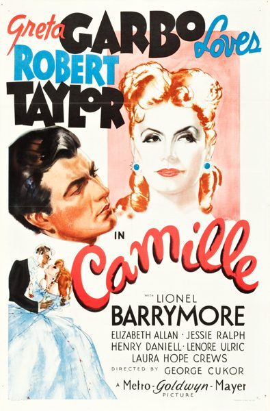

Camille

Starring: Greta Garbo, Robert Taylor, Lionel Barrymore
Director: George Cukor
Writer: Zoë Akins, Frances Marion, James Hilton
Producer: Bernard H. Hyman, Irving Thalberg, David Lewis
Camille is a 1936 American romantic tragedy film from Metro-Goldwyn-Mayer directed by George Cukor, and produced by Irving Thalberg and Bernard H. Hyman, from a screenplay by James Hilton, Zoë Akins, and Frances Marion. The picture is based on the 1848 novel and 1852 play La dame aux camélias by Alexandre Dumas, fils.
Trivia
- Selected for the National Board of Review: Top Ten Films.
- Won the New York Film Critics Circle Award for Best Actress.
- Also nominated for: Academy Award for Best Actress.
- Based on The Lady of the Camellias (1848 novel by Alexandre Dumas fils).
- The play had previously been adaptated for film in 1912, 1915 and 1917, in 1921 with Nazimova and Rudolph Valentino, and in 1926 with Norma Talmadge.
- Irving Thalberg assigned Davis Lewis to work on the film as associate producer.
- According to Lewis, Greta Garbo only agreed to make the movie if MGM would finance Conquest.
Previous Showings
7 Runs • 4 Festivals
Original Billings: 1 run (February 7, 1937)
Original Run: February 7, 1937 (Sunday - Tuesday)
All runs on record (7):
- February 7, 1937 (Sunday - Tuesday)Greta Garbo, Robert Taylor
- May 11 - 13, 1990w/ The Painted Veil, The Torrent
- July 28, 1994w/ A Tale of Two Cities
- March 5 - 9, 1999Directed by George Cukorw/ Romeo and Juliet
- February 17 - 18, 2007Film Noir, Val Lewton, 1930s musicals and more!w/ Maytime
- November 26 - 27, 2011Fall 2011w/ Ninotchka
- February 7 - 9, 2012Winter 2012w/ A Night at the Opera